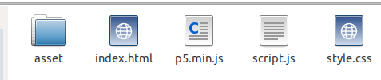

Placez-vous dans votre dossier personnel et créez un nouveau dossier que vous nommerez "p5". Dans ce dossier "p5", créez un autre dossier nommé "ex0".
Placez-vous dans le dossier "ex0" et créez 3 fichiers :
Toujours dans le dossier "ex0", créez un dossier "asset"
Téléchargez l'archive "p5.zip" en vous rendant ici (choisissez "p5.js complete").
Une fois le fichier chargé, "dézipper" le et récupérer le fichier "p5.min.js". Placez ce fichier ""p5.min.js" dans votre répertoire "ex0".
Vous devriez donc avoir ceci dans votre dossier "ex0" :
À l'aide d'un éditeur de texte (scite par exemple), ouvrez le fichier "index.html" et saisissez le code suivant :
index.html
<!DOCTYPE html>
<html lang="fr">
<head>
<meta charset="utf-8">
<title>p5.js</title>
<link rel="stylesheet" href="style.css">
<script src="p5.min.js"></script>
<script src="script.js"></script>
</head>
<body>
</body>
</html>
N'hésitez pas à consulter le site http://p5js.org/download/ de temps en temps, afin de vérifier que vous possédez bien la dernière version de p5js. Si vous constatez qu'une nouvelle version est disponible, téléchargez cette nouvelle version en suivant les consignes données précedemment.
La structure de base qui vous permettra d'utiliser p5.js est en place, par la suite, il suffira de "copier-coller" le dossier "ex0" et de le renommer à chaque fois que vous aurez besoin de créer un nouvel exemple.